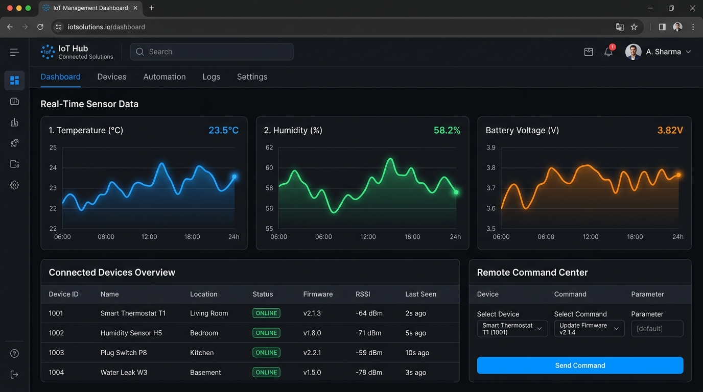

本マニュアルでは、設置されたセンサー端末からのデータ確認方法、管理画面（ダッシュボード）の見方、異常時の通知の受け取り方、および遠隔操作手順をわかりやすく解説します。
現場に設置されたマイコン（ESP32など）から届く温湿度やバッテリ状態を、自動で収集・蓄積・可視化する管理システムです。
センサーから送られてくる温度・湿度・バッテリ電圧を、見やすい折れ線グラフで自動表示します。
35℃以上の高温やバッテリ残量低下などの異常を自動で見つけ、SlackやDiscordに即座に知らせます。
登録された正規の端末だけが通信できる「ゼロトラスト暗号化」により、部外者による盗聴や不正アクセスを遮断します。
データを約81%圧縮して送信。もし電波が圏外になっても端末内に32件ためておき、復帰時にまとめて送信します。
管理サーバはパソコン（またはクラウドサーバ）上で簡単に起動できます。
ターミナル（PowerShell等）で以下のコマンドを実行します：
※ 画面に [DASHBOARD] Web UI Dashboard running at: http://localhost:8080/ と出たら起動完了です。
Google Chrome、Microsoft Edge などのブラウザを開き、アドレスバーに以下を入力します：
※ 同じWi-Fi内の別PCやタブレットから見る場合は http://[サーバのIPアドレス]:8080/ で開けます。
ブラウザで http://localhost:8080/ を開くと、以下のような管理画面が表示されます。

▲ IoT管理ダッシュボード画面 (リアルタイム折れ線グラフ・端末一覧・遠隔操作パネル)
選択中の端末から送られてきた温度・湿度・バッテリ電圧が折れ線グラフでリアルタイムにプロットされます。
登録されているすべてのセンサー端末の状態がひと目でわかります。
| 項目 | 表示例 | 意味 |
|---|---|---|
| デバイスID | DEV-ESP32-001 |
端末固有の識別番号です。 |
| ステータス | ONLINE | 正常に定期通信が行われている状態です。 |
| ファームウェア | 1.0.0-PSRAM |
端末内部のプログラムのバージョンです。 |
| 起動間隔 | ⏱ 10秒 / 60秒 | エッジ端末が現在設定されている定期測定・送信スリープ間隔です。 |
| ステータス | ONLINE | 正常に定期通信が行われている状態です（送信待ちコマンドがある場合は ⏳ 送信待ち (1) バッジが点灯）。 |
| 電波強度 (RSSI) | -32 dBm |
Wi-Fiの電波の強さです（-30〜-60が良好、-85以下は弱電波）。 |
ボタンをクリックするだけで、遠隔地のセンサー端末に指示を送ることができます。コマンド発行後は 「⏳ コマンド送信待ちです (X秒経過)」 とリアルタイムにカウントアップされ、端末が次回起床して指示を適用した瞬間に 「✅ 送信・適用完了 (所要時間: Y秒)」 へと自動更新されます。
本システムは、データを受信した瞬間に以下の基準で自動チェックを行います。異常を見つけた場合、自動的に警告ログを記録し、外部チャット（SlackやDiscord）へ通知を送ります。
| アラート名 | 判定基準 | 危険度 | どんなときに出る？ |
|---|---|---|---|
| 高温アラート | 温度が 35.0 ℃ を超えたとき | CRITICAL (重大) | 真夏の猛暑、サーバ室のエアコン停止、機器の異常発熱時など。 |
| 低温・凍結注意 | 温度が 0.0 ℃ 未満になったとき | WARNING (警告) | 冬場の凍結リスクや低温障害の防止に。 |
| バッテリ残量低下 | バッテリ残量が 20 % を下回ったとき | CRITICAL (重大) | 電池が切れそうな端末をお知らせ。交換時期がわかります。 |
| 電波微弱アラート | 電波強度が -85 dBm より弱いとき | WARNING (警告) | Wi-Fiルーターから離れすぎていて通信が途切れそうなとき。 |
画面左下の **「リモートコマンド送信パネル」** から、遠隔地のセンサー端末に指示を送ることができます。
デバイステーブルから指示を送りたい端末（例: DEV-ESP32-001）をクリックして選択します。パネル上に「現在の起動間隔」が表示されます。
[ ⏱ スリープ10秒に変更 ] または [ ⏱ スリープ60秒に変更 ] をクリックします。
ボタンを押すと直ちに 「⏳ コマンド送信待ちです (1秒経過... 2秒経過...)」 とカウントアップが始まります。端末がスリープから目覚めて通信した瞬間に設定が反映され、「✅ コマンドがエッジデバイスに送信・適用されました (所要時間: 8秒)」 と通知されます。以降は設定した間隔が永続的に維持されます。
端末が次にスリープから目覚めて通信してきた瞬間に、自動的に指示が届き実行されます。
cd server ➔ go run main.go を実行してサーバが立ち上がっているかご確認ください。また、URLが http://localhost:8080/ になっているかご確認ください。
8443 への通信が遮断されていないか。server/ フォルダ内にある iot_platform.db ファイルを削除してサーバを再起動すると、データベースが完全にクリーンな初期状態に戻ります。